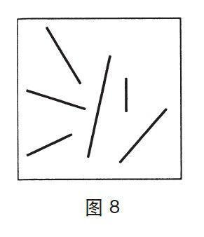

平均长度与总长度是完全不同的数量概念
还有一个例子，请看这个问题：图8中各条线的平均长度是多少？

这个问题很简单，系统1无须任何提示就能回答。实验显示，人们在不到一秒钟的时间里完全可以精确地记下很多线段的平均长度。此外，观察者的认知系统即使正忙于记忆，这些判断的精确度也不会受到影响。认知系统未必知道如何用英寸或厘米为单位来描述平均值，但是如果让其判断另外一条线是否符合平均值，它们的判断也是非常精确的。对于一组线的长度标准生成一个印象无须系统2的参与，系统1会自主且毫不费力地完成这一任务，就像它记一组线的颜色和它们之间不相平行的事实一样轻松。我们也可以立刻对众多物品的数量生成一个印象，如果其数量只有4个或少于4个的话，印象会很精确；如果更多的话，就会变得模糊。
现在我们来讨论另外一个问题：图8中所有线的总长度是多少？这是一种全新体验，因为系统1无法为回答这个问题提供建议。为此题作答的唯一办法就是启动系统2，系统2会尽力估计平均值，评估或数出有几条线，用平均长度去乘条数得出结果。
仅凭一瞥系统1计算出一组线的总长度，其结果多半不对，这一点你很清楚。你认为自己绝不会这样做。事实上，这是该系统一个重要的局限性。因为系统1通过原型或一组典型事例来代表不同事物分类，它能解决好平均问题，但对总量问题就束手无策了。一个类别的规模及其所包含的实例数量，在我们判断总额变量时常常被忽略掉了。
在我们进行的众多实验中，有一项是根据那次损失惨重的埃克森–瓦尔德斯号（Exxon Valdez）原油泄漏事件的诉讼而设计的，我们询问受试者是否愿意掏钱买网来覆盖油池，因为这些油池常淹死迁徙的鸟类。受试者组成的不同小组分别表明了各组的意愿，他们愿意掏钱来拯救鸟的数量分别为2000只、20000只和200000只。如果拯救鸟类是个经济善举的话，其价值大小就要看总数这一变量了，即拯救200000只鸟应该比拯救2000只鸟更有价值。事实上，3个组的平均捐款分别是80美元、78美元和88美元，与鸟的数量没有什么关系。3组受试者做出反应的对象为原型—一只无助的小鸟被淹死的可怕画面，鸟的羽毛浸泡在黏稠的原油中。实验人员屡次发现，在这样的情形下，受试者几乎完全忽略了数量的概念。